NEWS
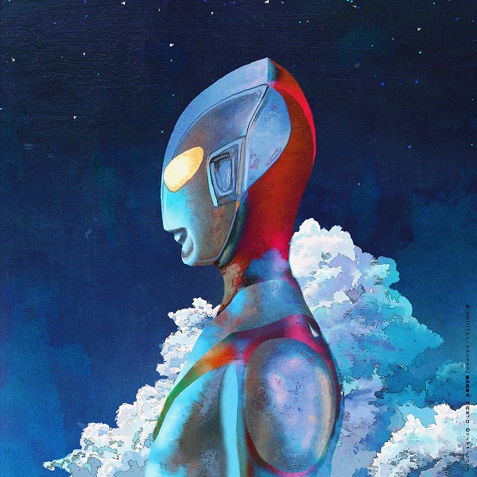
2022.06.15
「M八七」アナログ盤 7月10日発売
- 映画「シン・ウルトラマン」主題歌、米津玄師「M八七」のアナログ盤リリースが決定致しました。ウルトラマンの日である7月10日(日)に発売。米津玄師としては初のアナログ作品となります。
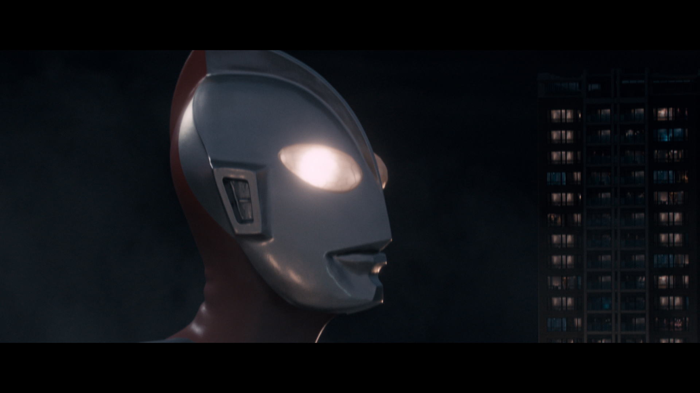
2022.06.03
「M八七」×「シン・ウルトラマン」MV公開
- 米津玄師「M八七」×「シン・ウルトラマン」87秒のコラボMVを公開致しました。 映画の未公開映像をふんだんに使用した特別MVを、主題歌「M八七」と共にお楽しみください。
2022.05.25
「M八七」映画館・庵野秀明展・ロフトでの取扱決定
- シングル「M八七」を、全国の映画館、ロフトでもお取り扱い頂くことが決定となりました。
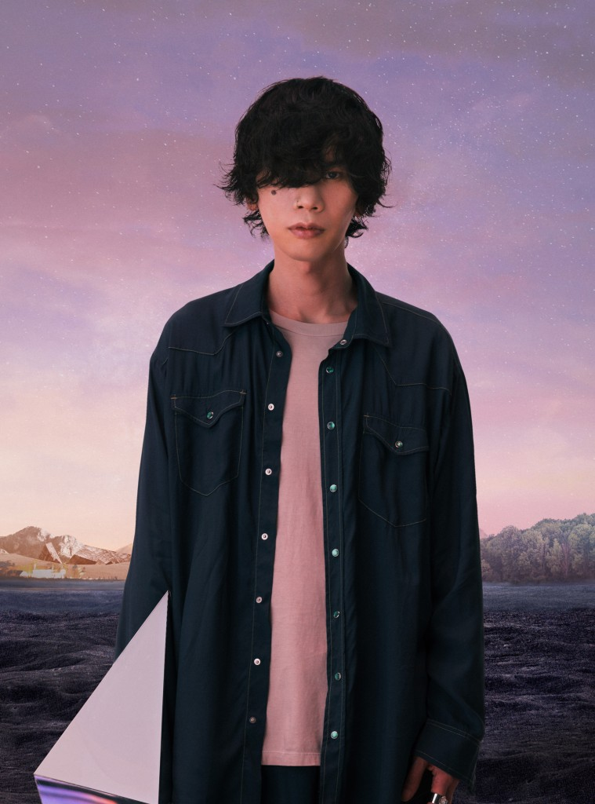
2022.05.22
「シン・ウルトラマン」特番にインタビュー出演
- 映画『シン・ウルトラマン』特別番組に、米津玄師のインタビュー出演が決定致しました。
特別番組「『シン・ウルトラマン』をもっと楽しむために！」
出演：斎藤工・長澤まさみ・西島秀俊・有岡大貴・早見あかり・樋口真嗣監督・米津玄師
放送日時：5月11日(水) 0時～
配信プラットフォーム：｢TSUBURAYA IMAGINATION｣(無料領域)
視聴URL：https://imagination.m-78.jp/video/dm9kL2FlMTI5NzBfbTAwMDAwMDF6YQ
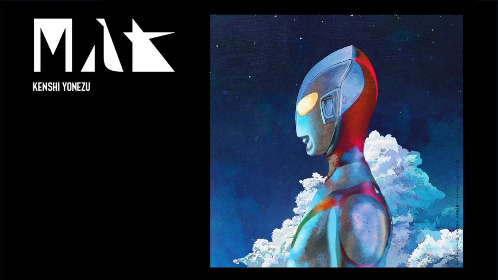
2022.05.20
「米津玄師 – M八七 Radio」公開
- WEBラジオ「米津玄師 M八七 Radio」を、YouTubeに公開致しました。
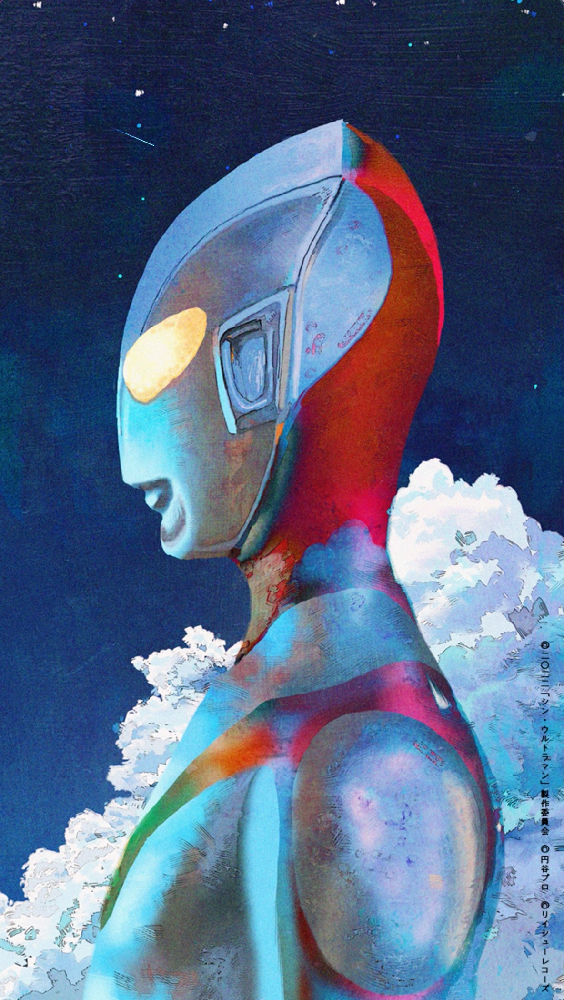
2022.05.17
Instagramに「流星」投稿 隠しリンクに10周年ギフト
- 米津玄師が、Instagramストーリーズを投稿。
投稿された動画は、「M八七」のジャケットに曲がのせられており
じっと空を見続けると、一瞬だけ輝く流星が現れる瞬間があり、その流星を追いかけタップすると隠しリンクが出現する仕掛けとなっています。
ストーリーズは、5月16日(月)〜5月21日(土)まで毎日投稿され、隠しリンク先には、10周年を記念したギフトが用意されていました。
米津玄師 Instagram
https://www.instagram.com/hachi_08/
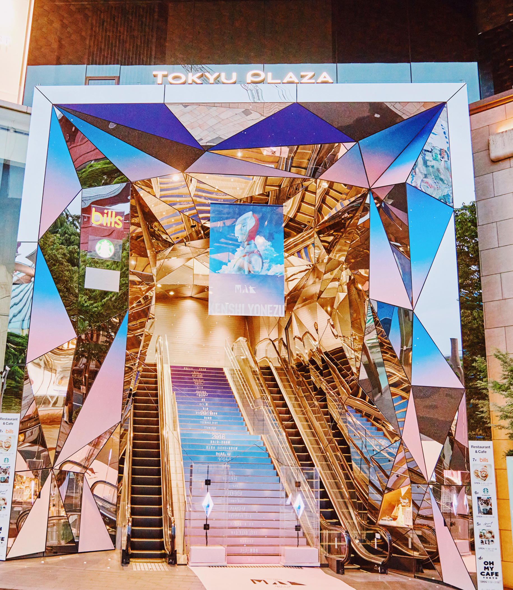
2022.05.16
「10thゲート」完成
- 本日5月16日(月)に、米津玄師は10周年を迎えました。
1stアルバム「diorama」が2012年5月16日に発売されてからちょうど10年となるこのメモリアルな日に、10年間の軌跡とこれからの未来を感じさせるデザインの「10thゲート」が完成。
会場は、東京・東急プラザ表参道原宿のエントランス。中央にある長階段には、米津の楽曲タイトルが年代順に下から上へと記載されていき、一番上の階段には「音楽はつづく」のメッセージが記されています。また、ミラーのゲートに「M八七」のジャケットフラッグが冠され、階段下には、米津のキャラクターイラストやロゴなどが星に瞬く３Dサイネージが設置されています。
是非、この機会に、記念写真の撮影などを行い楽しんでください。
5/21追記
実施期間が、5月25日(水)まで延長となりました。
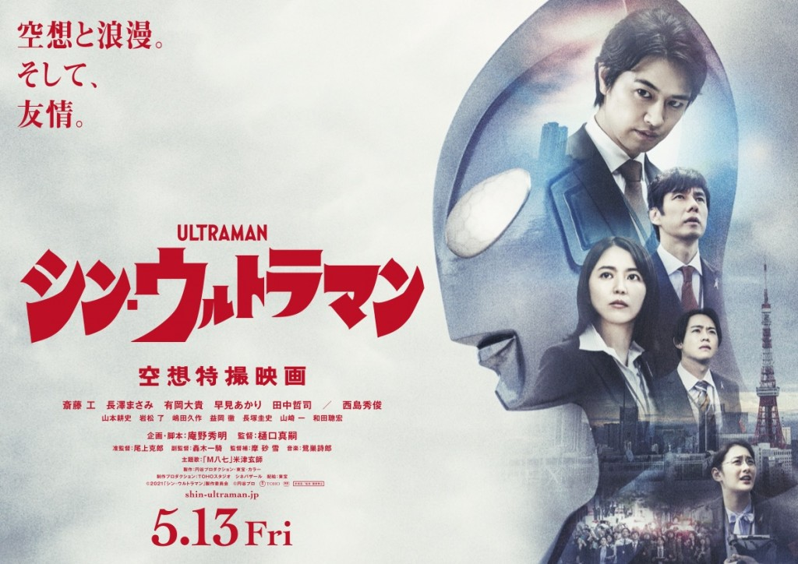
2022.05.16
映画「シン・ウルトラマン」パネル展示 開催
- ニューシングル「M八七」発売を記念し、店着日となる5/17(火)から、全国13店舗のCDショップにて、映画「シン・ウルトラマン」のパネル展示を開催致します。 ぜひCDと共に映画の世界をお楽しみください。
2022.05.15
米津玄師 12th Single「M八七」5月18日(水)発売
- 米津玄師が、映画『シン・ウルトラマン』主題歌として書き下ろした「M八七」を表題としたニューシングル「Ｍ八七」を5月18日(水)に発売致します。ジャケットも、米津玄師描き下ろしです。
2022.05.13
「M八七」Music Video 公開
- 映画「シン・ウルトラマン」が全国公開となる本日5月13日(金)、主題歌である米津玄師「Ｍ八七」のミュージックビデオを公開致しました。監督は林響太朗氏。
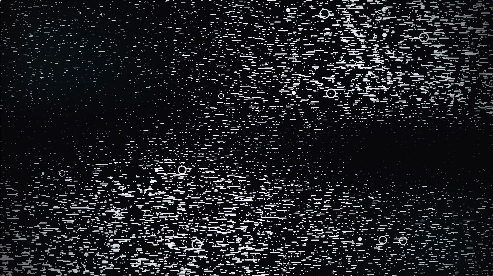
2022.05.12
動画「(OIO)」で「M八七」MV公開日通知
- 米津玄師 YouTube channelに「oIo」という動画が投稿され
映画「シン・ウルトラマン」が公開となる5月13日(金)に、「M八七」MV公開・先行配信の日時を解禁したことが発表されました。
この企画は、線と円が大きくゆらめき、星雲のようにも見える87秒の動画にスマートフォンのカメラをかざすと、ある瞬間だけQRコードを認識する事が出来る仕掛けになっており、QRコードは３パターンが用意されていました。 各QRコードにアクセスすると、それぞれ下記情報が表示され、そのまま自分のスマートフォンのカレンダーに予定を登録できる仕様となっています。
「oIo」告知内容
5月13日(金)0:00 「M八七」先行配信スタート
5月13日(金)8:00 「M八七」ミュージックビデオ公開
5月13日(金) 映画「シン・ウルトラマン」公開
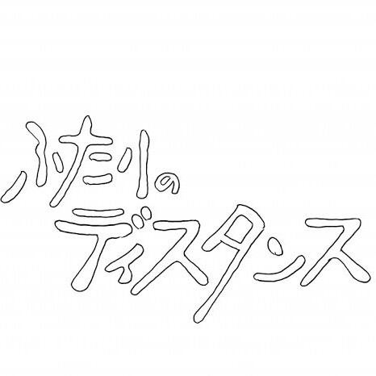
2022.04.28
「カナリヤ」NHK「ふたりのディスタンス」主題歌
- 米津玄師「カナリヤ」が、NHKの新番組「ふたりのディスタンス」主題歌に起用されることが決定致しました。 番組ロゴは、スタジオジブリ鈴木敏夫プロデューサーによるもの、そしてイラストは、スタジオジブリ作品でもおなじみのアニメーター、近藤勝也さんが手がけます。 見れば、大切な人に会いたくなる新しいドキュメンタリー。是非、楽しみにご覧ください。
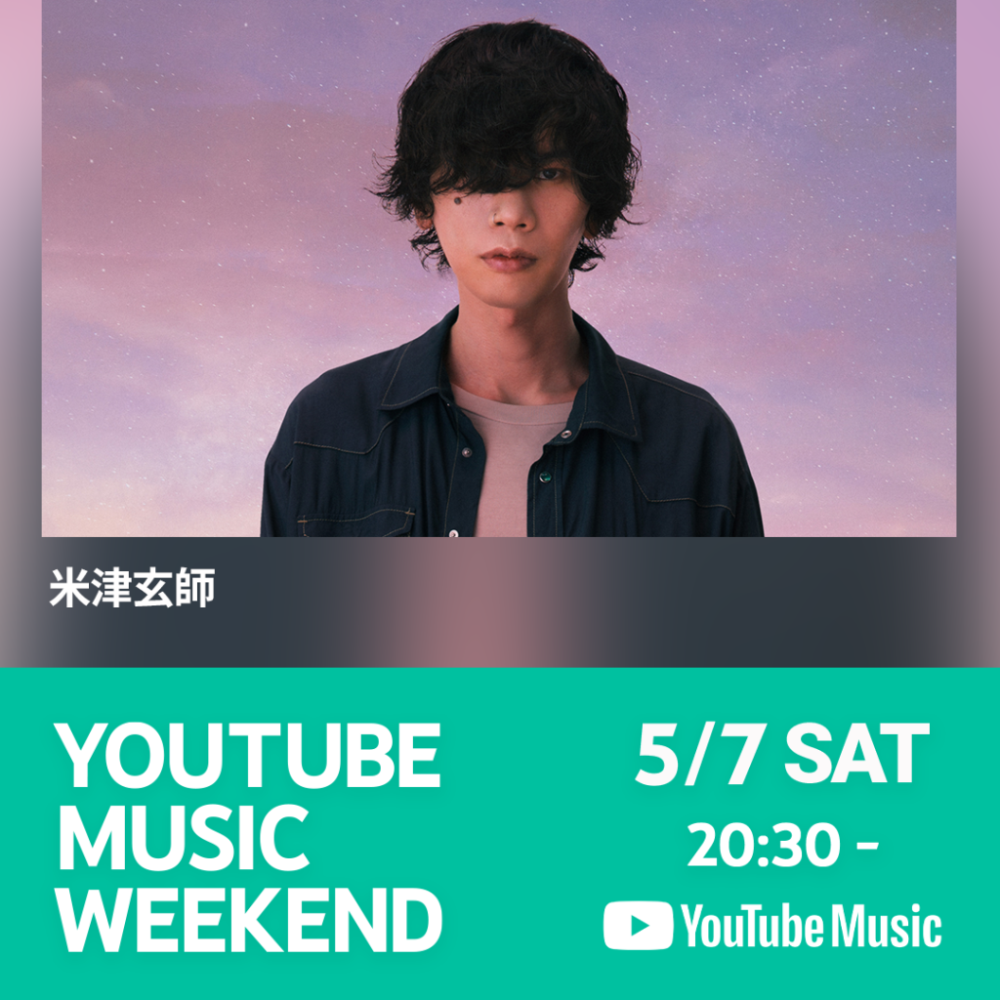
2022.04.27
「YouTube Music Weekend vol.5」参加決定
- 5/6(金)〜5/8(日)の3日間に渡ってYouTubeにて開催される「YouTube Music Weekend vol.5」に参加することが決定致しました。
米津玄師YouTubeチャンネルにて、「米津玄師 2019 TOUR / 脊椎がオパールになる頃」のライブ映像を公開致します。
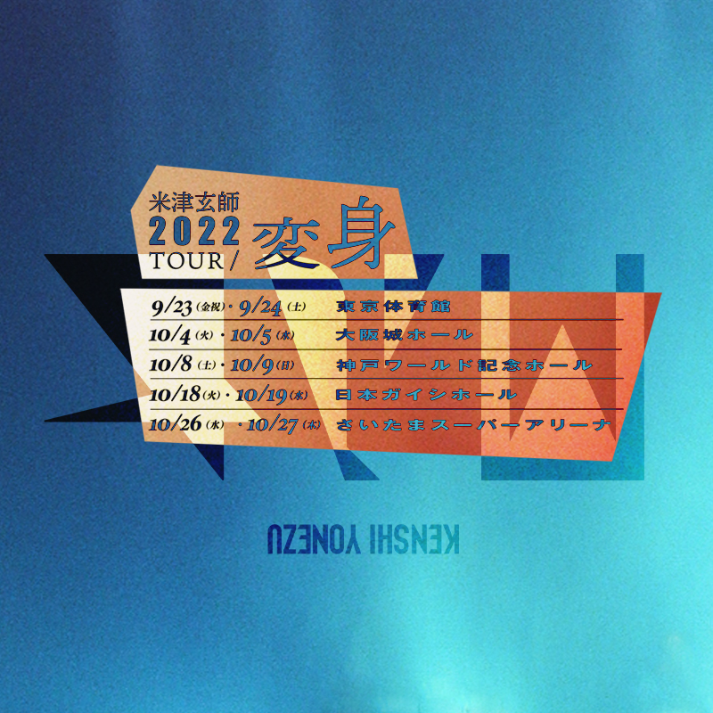
2022.04.26
米津玄師 2022 TOUR / 変身
- 約2年半ぶりとなるアリーナツアー「米津玄師 2022 TOUR / 変身」の開催が決定致しました。
チケット受付の詳細も発表しておりますので、下記をご確認ください。1次受付は、ニューシングル「M八七」に封入のシリアルナンバーにて、5月22日(日)までの受付となります。
2022.04.08
「M八七」映画「シン・ウルトラマン」主題歌に決定
- 映画『シン・ウルトラマン』主題歌として、新曲「Ｍ八七」を書き下ろしたことが発表となりました。
映画『シン・ウルトラマン』は、5月13日(金)全国公開。庵野秀明氏が企画・脚本、樋口真嗣氏が監督を務め、「ウルトラマン」の企画・発想の原点に立ち還りながら、現代日本を舞台に、未だ誰も見たことのない“ウルトラマン”が初めて降着した世界を描いた、感動と興奮のエンターテイメント作品です。
「Ｍ八七」というタイトルは、米津のアイディアに庵野氏からリクエストを頂きこの形となりました。
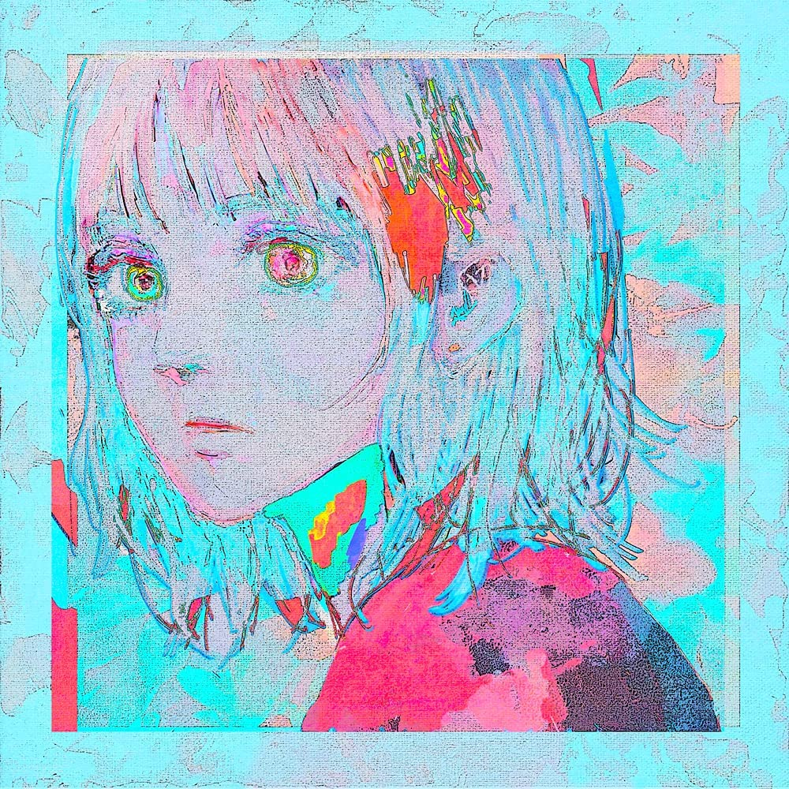
2022.03.14
「第36回 日本ゴールドディスク大賞」史上初5年連続受賞
- 日本レコード協会主催「第36回 日本ゴールドディスク大賞」にて、米津玄師の「Pale Blue」が、ダウンロード数上位5作品に授与される「ベスト5ソング・バイ・ダウンロード」を受賞致しました。「ピースサイン」（2018年）、「Lemon」（2019年）、「馬と鹿」（2020年）、「感電」（2021年）に続き、史上初となる5年連続での受賞達成となりました。
第36回 日本ゴールドディスク大賞
■ ベスト5ソング・バイ・ダウンロード
・米津玄師「Pale Blue」
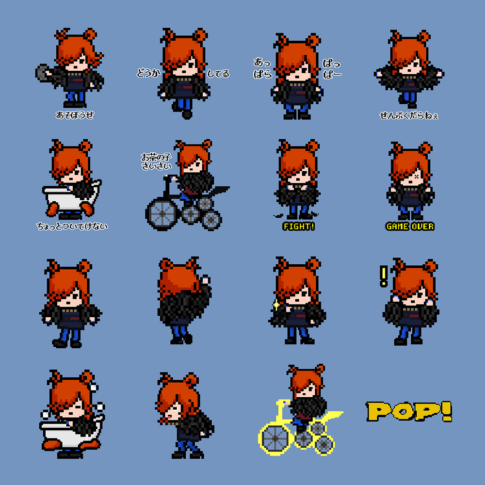
2022.02.10
「POP SONG」LINEスタンプ発売
- 「POP SONG」Music Videoのティザー予告編動画内で8bitに変身した米津玄師のキャラクターが、動くLINEスタンプとして本日より発売開始となりました。
LINEスタンプ
スタンプ名： 米津玄師 POP SONG
スタンプ個数： 1セット16種類
販売価格： 100コイン（250円）
ご購入はこちら：https://line.me/S/sticker/18382332
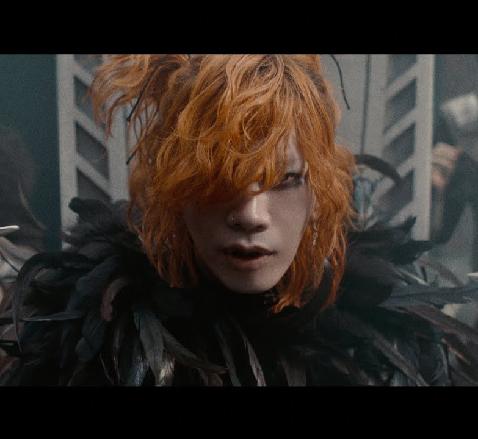
2022.02.06
「POP SONG」MV公開
- 米津玄師「POP SONG」Music Videoをプレミア公開致しました。
「POP SONG」は、2月7日(月)より配信リリース。
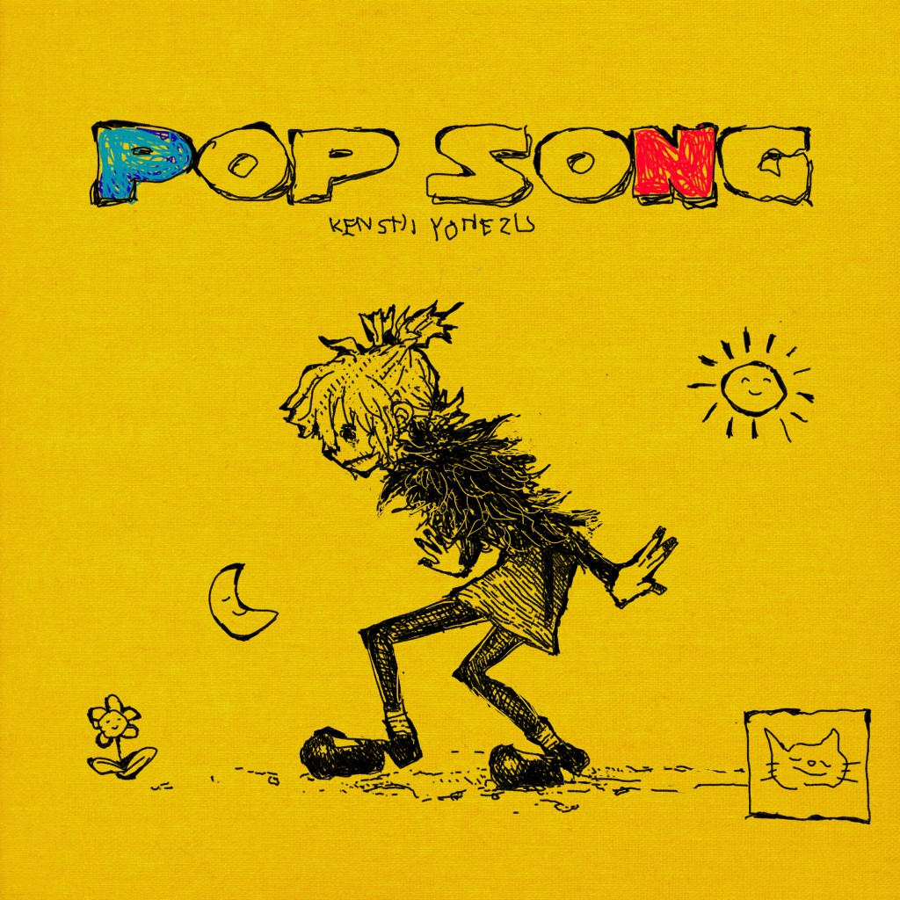
2022.02.04
「POP SONG」ジャケット公開
- 新曲「POP SONG」のジャケットを公開致しました。米津玄師本人の描き下ろしイラストとなり、CMのキャラクターを表現した作品となっております。
配信リリースは2月7日(月)、iTunesでのプリオーダーは2月5日(土)0時よりスタート致します。
ミュージックビデオは、2月6日(日)19時より、米津玄師YouTubeチャンネルにてプレミア公開することが決定致しました。
2/6：MVティザー公開
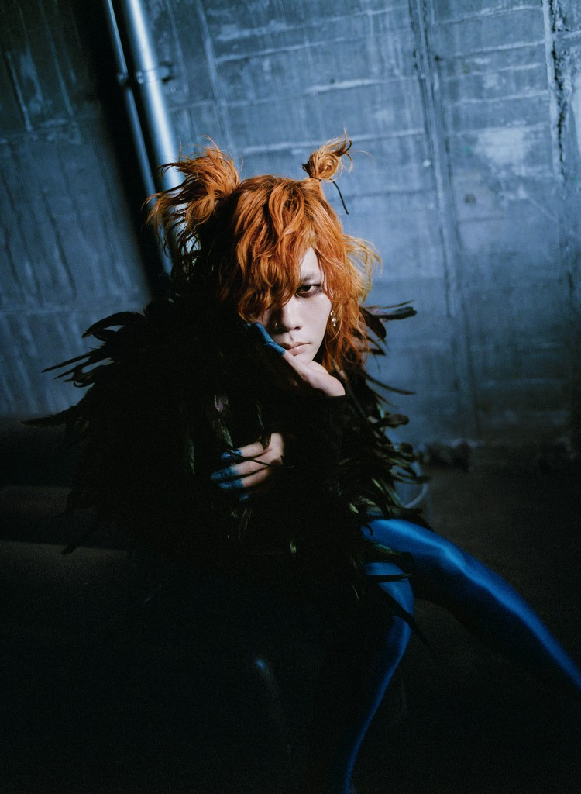
2022.01.28
「POP SONG」新ビジュアル公開
- 米津玄師「POP SONG」の最新アーティストビジュアルを公開致しました。
「POP SONG」のMusic Videoは、2月6日(日)夜にプレミア公開、2月7日(月)には配信リリースが決定致しました。
2/4：ジャケット公開
2/6：MV公開
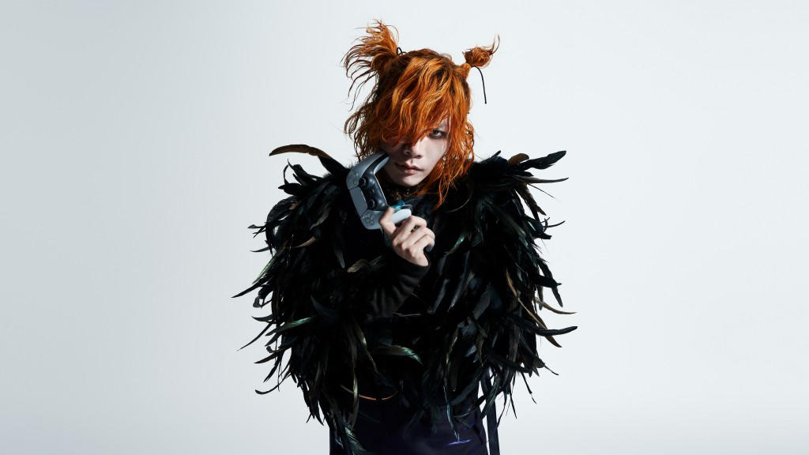
2022.01.24
「POP SONG」本人出演「PlayStation」CM公開
- 米津玄師が出演し、新曲「POP SONG」が起用されたPlayStation®の新CM「遊びのない世界なんて｜Play Has No Limits」30秒版CMが、1月23日（日）PlayStation内で先行公開されました。PlayStation内での楽曲解禁は国内では史上初の試みとなります。
1月24日よりTVCMがスタート致します。
CMは、米津玄師が出演、新曲「POP SONG」が起用され、米津玄師は楽曲制作だけでなく、変身というアイデアからキャラデザまで、コンセプト企画にも参加しております。
監督は児玉裕一氏になります。
また、CMグラフィックが、SHIBUYA109渋谷店にも登場。1月30日までの期間限定掲出です。
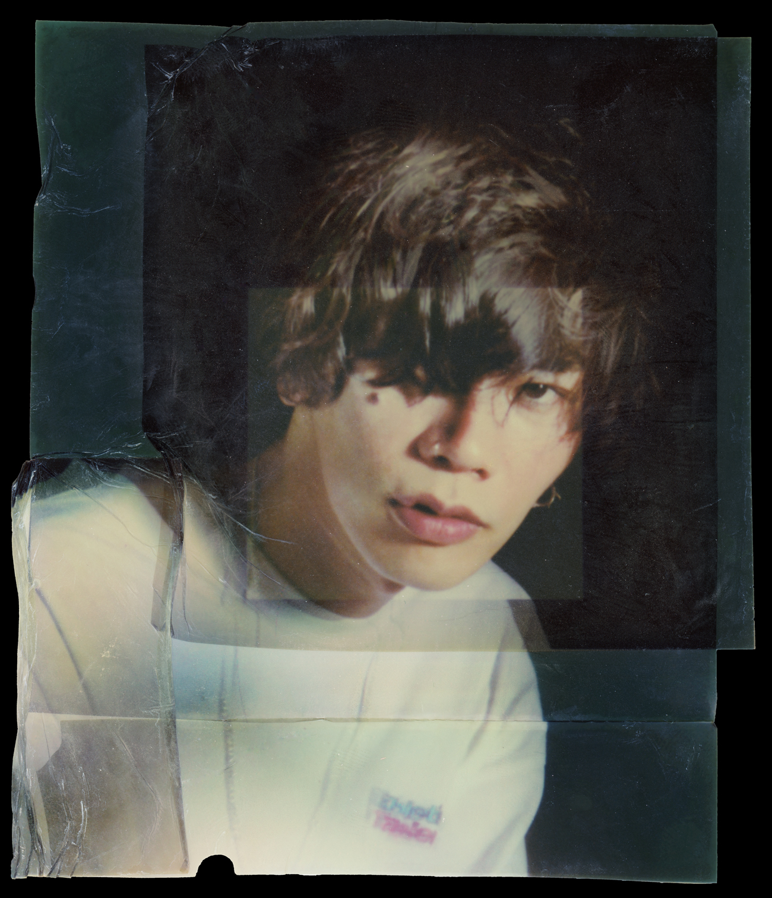
2022.01.13
奥山由之「BEST BEFORE」にコメント寄稿
- 「感電」MVの監督をはじめ、米津玄師のアーティスト写真も多数担当してくださっている、写真家・映像監督の奥山由之氏の写真集「BEST BEFORE」発売にあたり、コメント寄稿を致しました。
彼のユーモアにはいつだって心が動きます。光を見つけて切り取る力。尊敬しています。
米津玄師
〈書籍情報〉
奥山由之「BEST BEFORE」
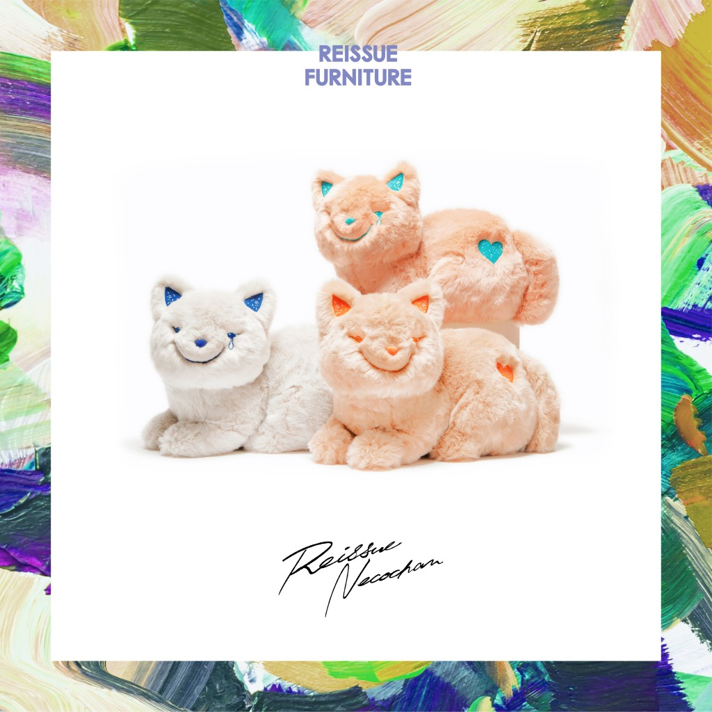
2021.12.17
「リイシューねこちゃん Grande」12/19より限定発売
- 米津玄師が立ち上げたインテリアシリーズ「REISSUE FURNITURE」（リイシュー ファニチャー）。今年8月、#1商品、楽曲を香りで表現した「Room Perfume」（ルームパルファム）を発表しましたが、この度#2商品として「リイシューねこちゃん Grande（グランデ）」の発売が決定致しました。12月19日（日）13:00より限定発売致します。
今回発売する「リイシューねこちゃん Grande」は、米津玄師 / REISSUE RECORDSのロゴである、猫の大きなぬいぐるみ。ふんわり柔らかくとろけるような滑らかな毛並みは、並毛と逆毛があり触れるたびに光の反射によって違った表情を見せてくれます。 大きさは、抱き枕のように両手で抱きしめられるサイズで、体重を預けてもしっかりと支えてくれる程よい硬さと安定感があり、座った時に膝の上に置いて顎を乗せたり、寝ながら寄りかかったり、心も身体もホッと癒されるような時間を感じて頂けたらと思います。
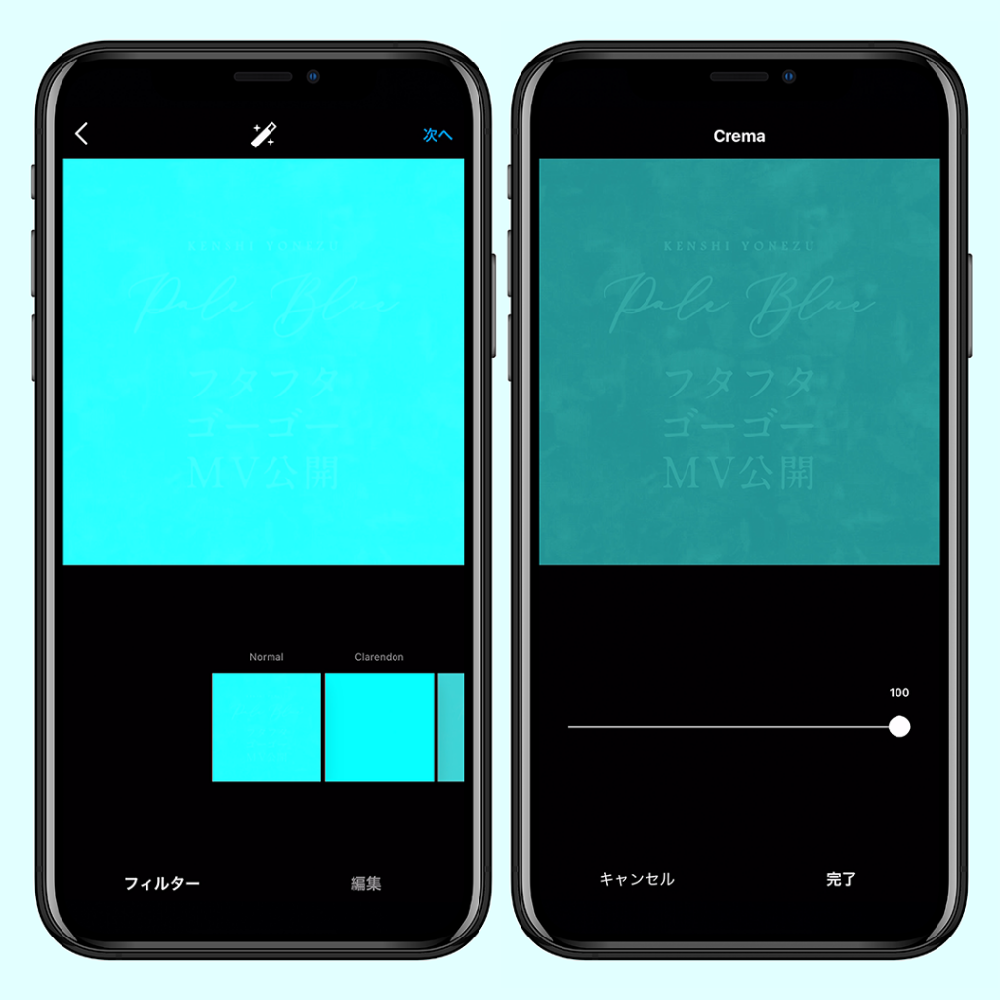
2021.10.29
「Pale Blue Letter」ACC TOKYO CREATIVITY AWARDS 5部門受賞
- 「Pale Blue」MVの公開日時を解禁するために行われた「Pale Blue Letter」が、国内最大のクリエイティブアワードである、2021 61st ACC TOKYO CREATIVITY AWARDS内のブランデッド・コミュニケーション部門（Aカテゴリー:デジタル・エクスペリエンス）にてゴールドを受賞致しました。
本企画はメディアクリエイティブ部門にてシルバー、デザイン部門にてブロンズ、ブランデッド・コミュニケーション部門（Dカテゴリー:ソーシャル・インフルーエンス）にてブロンズ、ブランデッド・コミュニケーション部門（Bカテゴリー:プロモーション/アクティベーション）にてファイナリストに選出、計5部門での受賞となりました。
尚、昨年開催された同アワードにて、「感電」MV YouTube公開企画が、メディアクリエイティブ部門グランプリ・総務大臣賞をはじめ3部門で受賞しており、2年連続での快挙とりました。
今回受賞した「Pale Blue Letter」は、今年の6月4日17時、米津がInstagram、Twitterアカウントに、ペールブルー1色の画像と、#PaleBlueLetterの文字を投稿。投稿されたペールブルー1色の画像は、Instagramのカメラフィルターなどを使用して加工、コントラストを上げると、「Pale Blue フタフタゴーゴー MV公開」という文字が出現し、MVが22:55に公開することを伝えるデジタルギミックレターとなりました。同時にアップされたInstagramストーリーでは、同様のギミックでMVのティザー映像が展開され、受けとったユーザーは謎解きをスタート。内容を解き明かしたユーザーの出現により「フタフタ」「MV公開」がトレンド入りするなど、SNS上はペールブルー一色に染まり、大いに盛り上がりました。
また「Pale Blue Letter」は三部作になっており、第二弾はCDの法人特典に同封されたペールブルー1色の紙を水に浸すと、本人描き下ろしイラストの他、「ありがとう。」というメッセージが浮かび上がってくる”アナログギミックレター“。第三弾は、米津玄師のHPで体験できる“Pale Blue Letterカメラ”。ARカメラとなっており、青空にスマートフォンをかざすとカメラが反応し、青空に星が現れ、米津玄師の手書きメッセージとイラストが出現する仕組みとなっております。
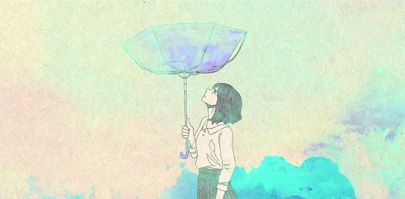
2021.10.17
「アイネクライネ」MV、3億回再生突破
- 2018.3.28
米津玄師 2ndアルバム「YANKEE」に収録された楽曲「アイネクライネ」MVが、YouTubeにて1億回再生を突破しました。
「アイネクライネ」MVは、米津自身が、作詞作曲だけでなく、企画・イラスト・編集など、すべての行程を一人で制作したアニメーション作品となり、楽曲とビジュアル両方から表現する楽曲です。
【YANKEE】
2019.6.4追記
2億回再生を突破致しました。たくさんのご視聴ありがとうございます。
2021.10.17追記
3億回再生を突破致しました。たくさんのご視聴ありがとうございます。
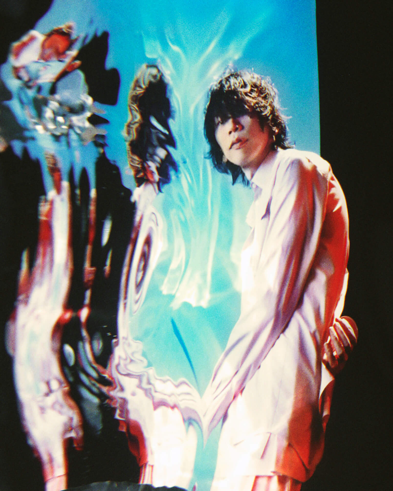
2021.10.15
「YouTube ショート」広告キャンペーンに参加
- 国内アーティストとして初となる「YouTube ショート」広告キャンペーンに参加することになりました。
YouTubeは2021年、「YouTubeショート」の広告キャンペーンを開始。今年７月、本キャンペーンのグローバル版にはBTS、The Weeknd、カミラ・カベロ、ドージャ･キャットが参加。 この度、日本でのローンチを迎え、その第一弾アーティストとして米津玄師の「Pale Blue」が起用されることとなりました。
2021.10.01
「Pale Blue MELT」ファイナルに「FORTNITE」ライブ映像を公開
- 昨年８月、全世界で3億5000万人以上のユーザーを誇る大人気バトルロイヤルゲーム「FORTNITE」（フォートナイト）で、日本人として初めて、バーチャルイベントを開催。その中から「迷える羊」「感電」のライブ映像をYouTubeチャンネルにて公開致しました。
それから１年後に開催された、ジェラートのポップアップストア「Pale Blue MELT」は、8/28ラフォーレ原宿を皮切りに、仙台・名古屋・渋谷・大阪・福岡での出店を経て、本日10/1〜3北海道にてファイナルを迎えます。ジェラートは通販が10/3(日)23:59まで受付となりますでの、是非、FORTNITEでのバーチャルなライブ体験とともに、楽曲を味わう体験をお楽しみください。
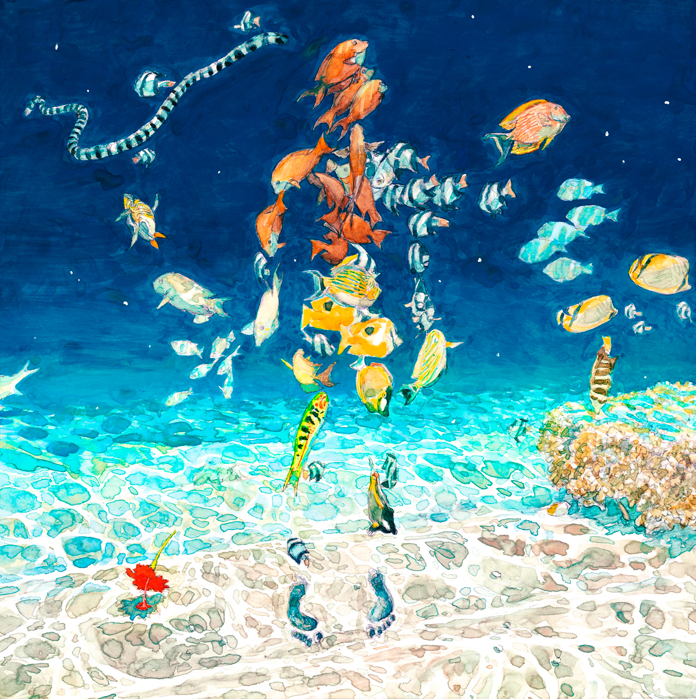
2021.09.28
「海の幽霊」MV 1億回再生突破
- 「海の幽霊」MVが、YouTubeにて1億回再生を突破しました。
「海の幽霊」は2019年にアニメーション映画「海獣の子供」の主題歌として書き下ろされ、米津の作品としては初の映画主題歌です。
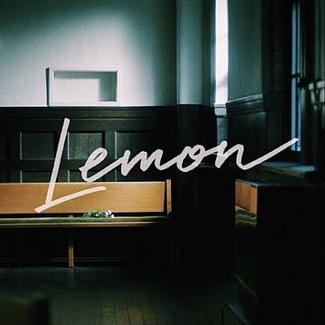
2021.09.18
「Lemon」MV 7億再生突破
- 「Lemon」MVが、YouTubeにて7億回再生を突破、「日本人アーティスト史上最高再生回数」の記録を更新致しました。
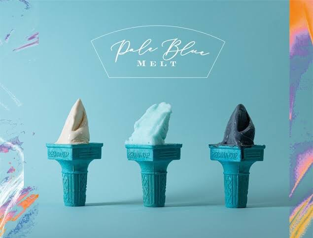
2021.08.27
「Pale Blue MELT」3曲をジェラートで味わう新体験をお届け
- 「Pale Blue」「ゆめうつつ」「死神」３楽曲をそれぞれイメージしたジェラートが、この夏、期間限定ショップ「Pale Blue Melt」にて発売されることとなりました。 この期間限定ショップで発売される商品は、オンライン通信販売にて、8/27(金)12:00よりアソートパック(6個セット)が販売されます。
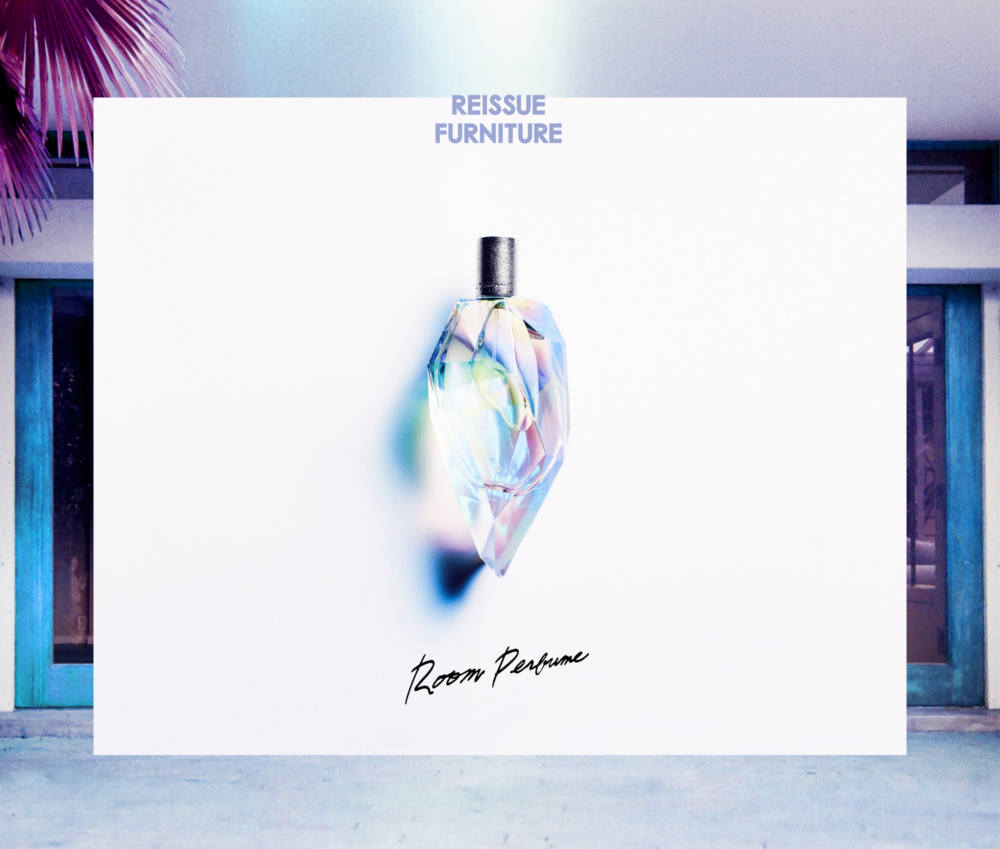
2021.08.20
「REISSUE FURNITURE」Room Perfume 発売
- 米津玄師が、インテリアグッズを展開する「REISSUE FURNITURE（リイシュー ファニチャー）」を立ち上げ、その第一弾アイテムとして、楽曲をイメージした「Room Perfume（ルーム パルファム）」を発売することとなりました。
2021.08.14
YouTube公式チャンネル登録者数600万人突破
- 米津玄師YouTube公式チャンネル登録者数が600万人を突破致しました。 日本人アーティストとして第1位の登録者数となり、チャンネル動画総再生数は37億回を突破しております。
2021.07.21
「カナリヤ」NHK「ふたりのディスタンス」主題歌
- 米津玄師「カナリヤ」が、8月16日に放送されるNHKの新番組「ふたりのディスタンス」主題歌に起用されることが決定致しました。
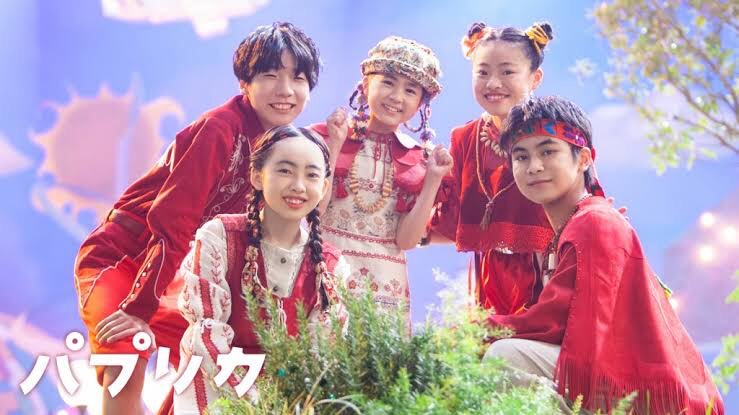
2021.07.19
「パプリカ」集大成MV公開・ 9/27グランドフィナーレ
- 2018年より、3年間全力で駆け抜けてきた「パプリカ」プロジェクトが、9月27日をもってグランドフィナーレを迎え、Foorin、Foorin team E、Foorin楽団は卒業することとなりました。